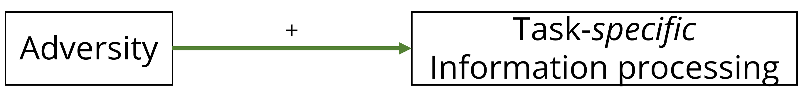
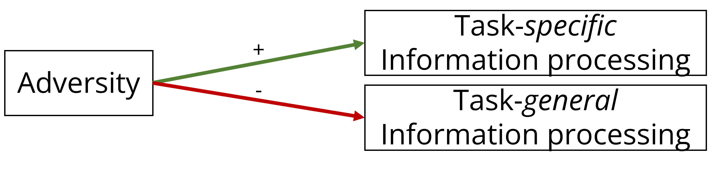
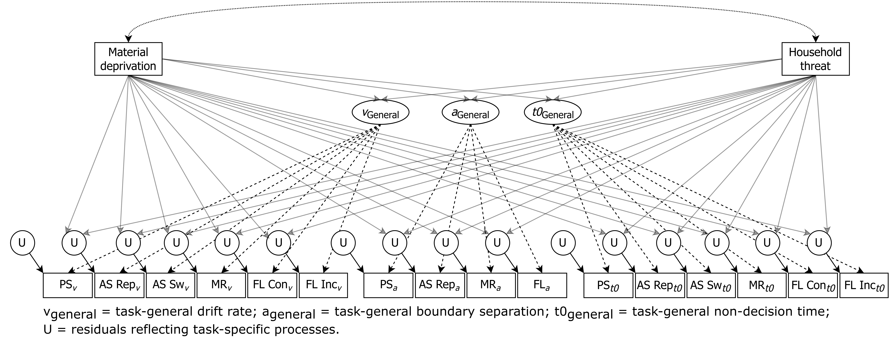

COGNITIVE DEFICITS AND ENHANCEMENTS IN YOUTH FROM ADVERSE CONDITIONS:
AN INTEGRATIVE ASSESSMENT USING DRIFT DIFFUSION MODELING IN THE
ABCD STUDY
Stefan Vermeent 1,2
p.c.s.vermeent@uu.nl
Ethan S. Young1
Meriah L. DeJoseph3
Anna-Lena Schubert4
Willem. E. Frankenhuis1,2
1 Department of Psychology, Utrecht University
2 Max Planck Institute for the Study of Crime, Security, and Law
3 Center on Early Childhood, Stanford University
4 Department of Psychology, University of Mainz
Introduction
Childhood adversity can lead to cognitive deficits or enhancements. Integrating deficit and adaptation-based frameworks is crucial for understanding how adversity shapes cognition. Two challenges currently prevent us from doing so:
The use of raw performance measures (e.g., response times), which conflate different stages of processing.
Adversity may lower or improve performance because it affects general processes or specific abilities.
Approach
We investigate the effect of household threat and material deprivation on performance on four tasks measuring inhibition, attention shifting, mental rotation, and processing speed in the ABCD sample.
We address the challenges above in a two-step approach:
Use cognitive modeling to isolate speed of information processing, preparation/execution speed, and response caution for each task.
Use SEM to associate adversity with task-specific processes (i.e., unique to a specific task) and task-general processes (i.e., shared across tasks).
Predictions from deficit and adaption-based frameworks
Adaptation-based framework: Adversity enhances specific abilities that solve real-world challenges (Frankenhuis and Weerth 2013; Ellis et al. 2022):

Deficit-based framework: Adversity can impair both specific abilities as well as general cognitive ability:

If adversity only affects preparation/execution speed or response caution, neither framework is supported.
Step 1: Isolate cognitive processes using Drift Diffusion Modeling

Step 2. Estimate whether adversity affects task-specific and/or task-general processes

Conclusion
Our findings will provide insights for theory and practice:
Is lowered/enhanced performance the result of differences in ability-relevant processes (e.g., attention shifting, inhibition) or ability-irrelevant processes (e.g., stimulus encoding, response caution)?
Should interventions focus on specific abilities (e.g., removing distractions from the classroom; providing targeted training) or on general abilities (e.g., use ecologically relevant stimuli to aid learning)?
Registered Report accepted pending data analysis at Developmental Science.
Ellis, Bruce, Laura Abrams, Ann Masten, Robert Sternberg, Nim Tottenham, and Willem Frankenhuis. 2022. “Hidden Talents in Harsh Environments.” Development and Psychopathology, 95–113. https://doi.org/10.1017/S0954579420000887.
Frankenhuis, Willem E., and Carolina de Weerth. 2013. “Does Early-Life Exposure to Stress Shape or Impair Cognition?” Current Directions in Psychological Science 22 (5): 407–12. https://doi.org/10.1177/0963721413484324.